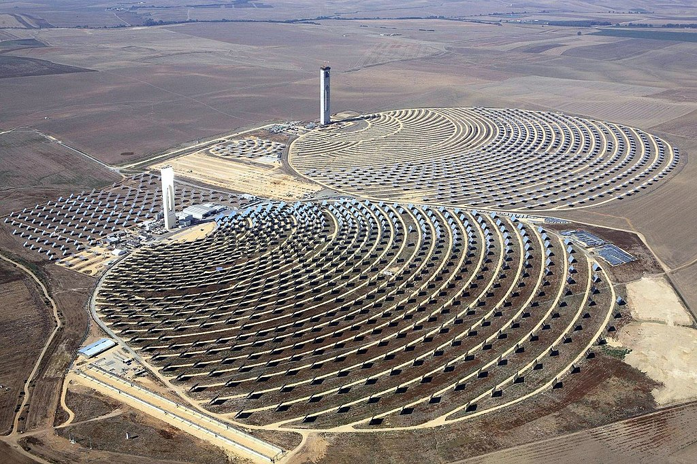
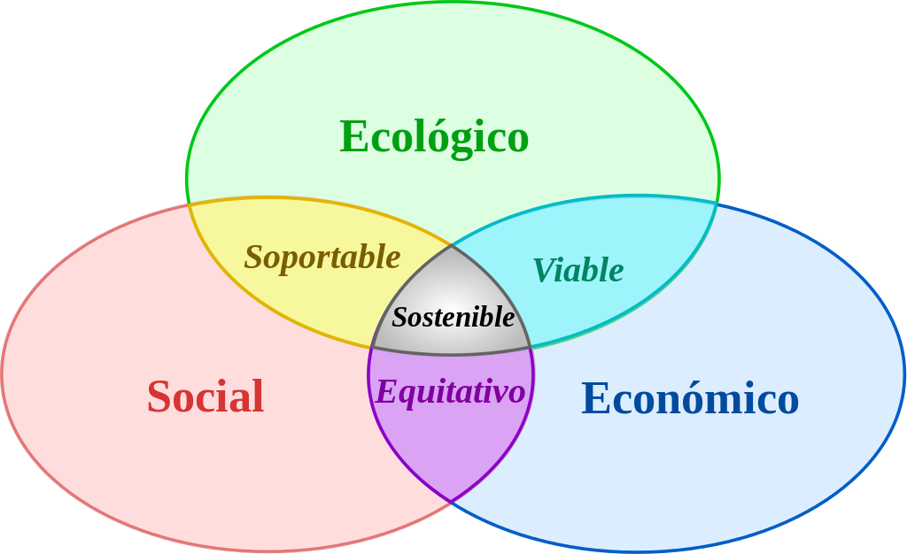

Las expresiones desarrollo sostenible,1 desarrollo sustentable2 y desarrollo perdurable3 se aplican al principio organizador
para alcanzar los objetivos de desarrollo humano y al mismo tiempo sostener la capacidad de los sistemas naturales de proporcionar
los recursos naturales y los servicios del ecosistema en función de los cuales dependen la economía y la sociedad, atendiendo -muy
especialmente- la preservación de sitios históricos y culturales. El resultado deseado es una situación de sociedad donde las condiciones
de vida y los recursos se utilizan para continuar satisfaciendo las necesidades humanas sin socavar la integridad y la estabilidad del
sistema natural. También puede definirse como el desarrollo que satisface las necesidades del presente sin comprometer la capacidad de las generaciones futuras para satisfacer las suyas propias.

Su definición se formalizó por primera vez en el documento conocido como el Informe Brundtland de 1987, denominado así por la primera ministra noruega Gro Harlem Brundtland, fruto de la
Comisión Mundial de Medio Ambiente y Desarrollo de Naciones Unidas, creada durante la Asamblea de las Naciones Unidas en 1983. Dicha definición se asumió en el Principio 3º de la
Declaración de Río (1992) aprobada en la Conferencia de las Naciones Unidas sobre el Medio Ambiente y el Desarrollo. Es a partir de este informe cuando se acató el término inglés
sustainable development, y de ahí nació la confusión entre los términos «desarrollo sostenible» y «desarrollo sustentable». La diferencia es sustantiva ya que «desarrollo sostenible»
implica un proceso en el tiempo y espacio y va de la mano de la eficiencia, lo cual le permite además ser eficaz. Mientras que el «desarrollo sustentable» implica una finalidad (aquí/ahora)
y va de la mano de la eficacia, pero no necesariamente de la eficiencia. Por tanto, un verdadero desarrollo sostenible implica por añadidura sustentabilidad, pero la sustentabilidad no implica necesariamente sostenibilidad.4
En resumen, el desarrollo sostenible o sustentable es un concepto desarrollado hacia el fin del siglo xx como alternativa al concepto de desarrollo habitual, haciendo énfasis en la reconciliación entre el bienestar
económico, los recursos naturales y la sociedad, evitando comprometer la posibilidad de vida en el planeta, ni la calidad de vida de la especie humana. El Informe sobre la Situación del Voluntariado en el Mundo resalta
que, en la mayoría de sociedades del mundo, los voluntarios contribuyen de forma significativa al desarrollo económico y social.5 En la actualidad, existe una preocupación generalizada por el fenómeno del cambio
climático, con el cuidado del medio ambiente y la conservación de bienes materiales e inmateriales de interés histórico-cultural, para que las nuevas generaciones puedan ser continuadoras de un planeta Tierra con futuro.
Ámbito de aplicación y definiciones
El concepto de desarrollo sostenible refleja una creciente conciencia acerca de la contradicción que puede darse entre crecimiento y desarrollo. "El crecimiento económico es una condición necesaria pero no suficiente
para el desarrollo. El crecimiento económico es un proceso a lo largo del tiempo durante el cual el nivel de actividad económica aumenta constantemente. Se considera que un país crece cuando su producción de bienes y
servicios aumenta en el largo plazo. Por lo tanto el crecimiento económico se observa en el seguimiento de la evolución del PBI (Producto Interno Bruto). Por su parte el desarrollo económico se refiere a un crecimiento
que genera una mejor distribución del ingreso y de la riqueza y que es capaz de reproducir las mejores técnicas de producción en cada uno de los sectores. Asimismo, el desarrollo es un crecimiento mas justo socialmente,
sin indigencia y con oportunidades de progreso social para todos los habitantes del país"

Esta conciencia de los costos humanos, naturales y medioambientales del desarrollo y el progreso ha venido a modificar la actitud de despreocupación o justificación que al respecto imperó durante mucho tiempo.
La idea de un crecimiento económico sin límites y en pos del cual todo podía sacrificarse vino a ser reemplazada por una conciencia de esos límites y de la importancia de crear condiciones de largo plazo que hagan
posible un bienestar para las actuales generaciones que no se haga al precio de una amenaza o deterioro de las condiciones de vida futuras de la humanidad.10
El desarrollo sostenible se aceptó exclusivamente en las cuestiones ambientales. En términos más generales, las políticas de desarrollo sostenible afectan a tres áreas: económica, ambiental y social. En apoyo a esto,
varios textos de las Naciones Unidas, incluyendo el Documento Final de la cumbre mundial en el 2005,11 se refieren a los tres componentes del desarrollo sostenible, que son el desarrollo económico, el desarrollo social
y la protección del medio ambiente, como "pilares interdependientes que se refuerzan mutuamente".
Justificación del desarrollo sostenible
La justificación del desarrollo sostenible proviene del hecho de que el hombre habita en un planeta finito pero tiene patrones de consumo desmedidos. En la Tierra se tienen recursos naturales limitados (nutrientes
el suelo, agua potable, minerales, etc.), susceptibles de agotarse.
Otro factor es el hecho de la creciente actividad económica sin más criterio que el económico mismo, tanto a escala local como planetaria.
El impacto negativo en el planeta puede producir graves problemas medioambientales que resulten incluso irreversibles.
Condiciones para el desarrollo sostenible
Los límites de los recursos naturales sugieren tres reglas básicas en relación con los ritmos para dicho desarrollo:
- Ningún recurso renovable deberá utilizarse a un ritmo superior al de su generación.
- Ningún contaminante deberá producirse a un ritmo superior al que pueda ser reciclado, neutralizado o absorbido por el medio ambiente.
- Ningún recurso no renovable deberá aprovecharse a mayor velocidad de la necesaria para sustituirlo por un recurso renovable utilizado de manera sostenible.
Según algunos autores, estas tres reglas están forzosamente supeditadas a la inexistencia de un crecimiento demográfico.19Se llama desarrollo sostenible a aquel desarrollo que es capaz de satisfacer las
necesidades actuales sin comprometer los recursos y posibilidades de las futuras generaciones. Intuitivamente una actividad sostenible es aquella que se puede mantener. Por ejemplo, cortar árboles de un
bosque asegurando la repoblación es una actividad sostenible. En cambio, consumir petróleo no es sostenible con los conocimientos actuales, ya que no se conoce ningún sistema para crear petróleo a partir
de la biomasa. Hoy sabemos que una buena parte de las actividades humanas no son sostenibles a medio y largo plazo tal y como hoy en día están planteadas. A lo largo de la historia, el ser humano ha utilizado
sus conocimientos del medio natural y las herramientas disponibles para extraer y transformar los elementos de la naturaleza que sirven para satisfacer sus necesidades.
Crítica en el uso del término
El término desarrollo sostenible se encuentra en numerosos discursos políticos, pero su aplicación es muy diversa y en ocasiones perversa.
Crítica desde el principio de precaución
Algunas ideologías ecologistas más radicales hacen énfasis en las opciones de crecimiento cero y aplicación estricta del principio de precaución,
que consiste en dejar de realizar determinadas actividades productivas mientras no se demuestre que no son dañinas.
Crítica decrecentista y ecosocialista
No obstante, el desarrollo económico no es necesariamente (según autores como Herman Daly) sinónimo de crecimiento económico ni de desarrollo humano. Aun así, cualquier medida relativa a las actividades
productivas no solo tiene efectos negativos o positivos (por ej.: Producción limpia) sobre el medio ambiente y la economía de las empresas, sino que también influye en el empleo y el tejido social.